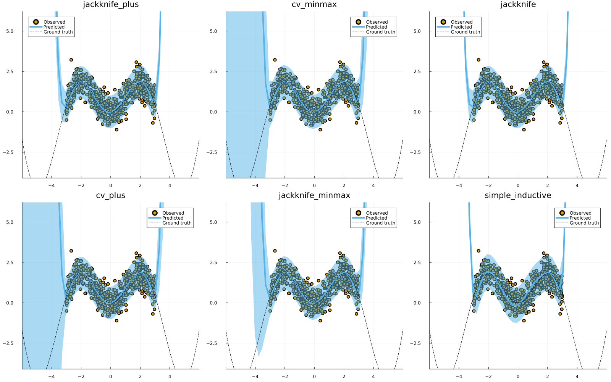

Regression
This tutorial mostly replicates this tutorial from MAPIE.
Data
We begin by generating some synthetic regression data below:
# Regression data:
# Inputs:
N = 600
xmax = 3.0
using Distributions
d = Uniform(-xmax, xmax)
X = rand(d, N)
X = reshape(X, :, 1)
# Outputs:
noise = 0.5
fun(X) = X * sin(X)
ε = randn(N) .* noise
y = @.(fun(X)) + ε
using MLJ
train, test = partition(eachindex(y), 0.4, 0.4, shuffle=true)
using Plots
scatter(X, y, label="Observed")
xrange = range(-xmax,xmax,length=N)
plot!(xrange, @.(fun(xrange)), lw=4, label="Ground truth", ls=:dash, colour=:black)Model
To model this data we will use polynomial regression. There is currently no out-of-the-box support for polynomial feature transformations in MLJ, but it is easy enough to add a little helper function for this. Note how we define a linear pipeline pipe here. Since pipelines in MLJ are just models, we can use the generated object as an input to conformal_model below.
LinearRegressor = @load LinearRegressor pkg=MLJLinearModels
degree_polynomial = 10
polynomial_features(X, degree::Int) = reduce(hcat, map(i -> X.^i, 1:degree))
pipe = (X -> MLJ.table(polynomial_features(MLJ.matrix(X), degree_polynomial))) |> LinearRegressor()Next, we conformalize our polynomial regressor using every available approach (except the Naive approach):
using ConformalPrediction
conformal_models = merge(values(available_models[:regression])...)
delete!(conformal_models, :naive)
# delete!(conformal_models, :jackknife)
results = Dict()
for _mod in keys(conformal_models)
conf_model = conformal_model(pipe; method=_mod, coverage=0.95)
mach = machine(conf_model, X, y)
fit!(mach, rows=train)
results[_mod] = mach
endFinally, let us look at the resulting conformal predictions in each case.
using Plots
zoom = -3
xrange = range(-xmax+zoom,xmax-zoom,length=N)
plt_list = []
for (_mod, mach) in results
plt = plot(mach.model, mach.fitresult, X, y, zoom=zoom, title=_mod)
plot!(plt, xrange, @.(fun(xrange)), lw=1, ls=:dash, colour=:black, label="Ground truth")
push!(plt_list, plt)
end
plot(plt_list..., size=(1600,1000))